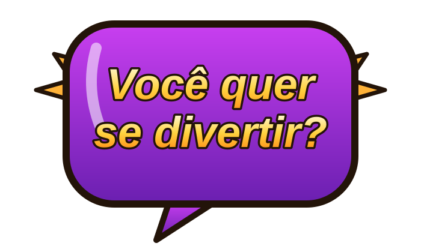
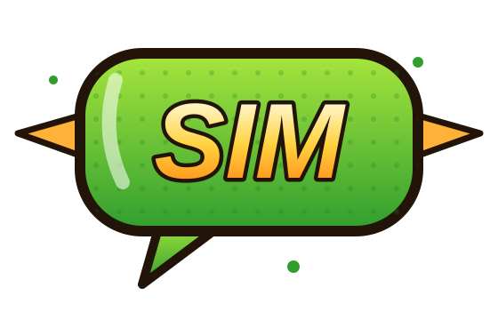
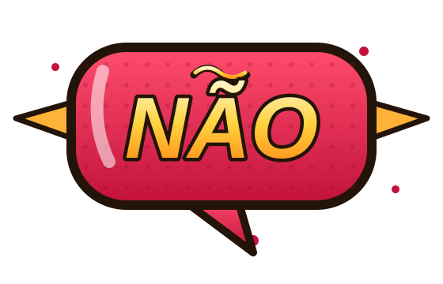
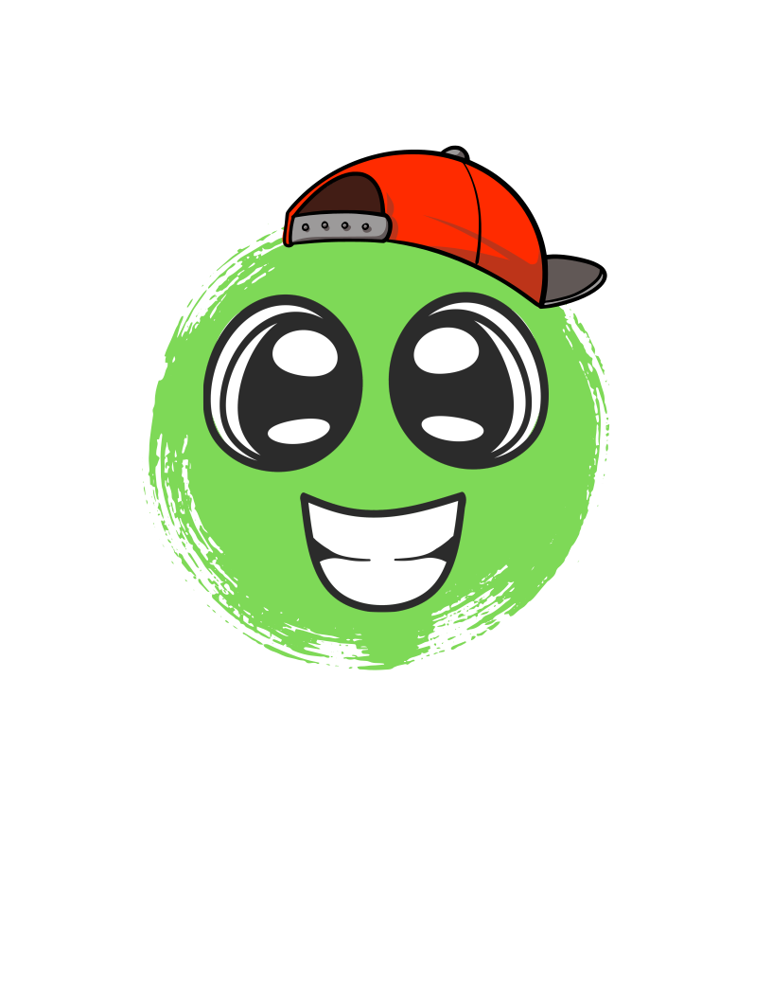
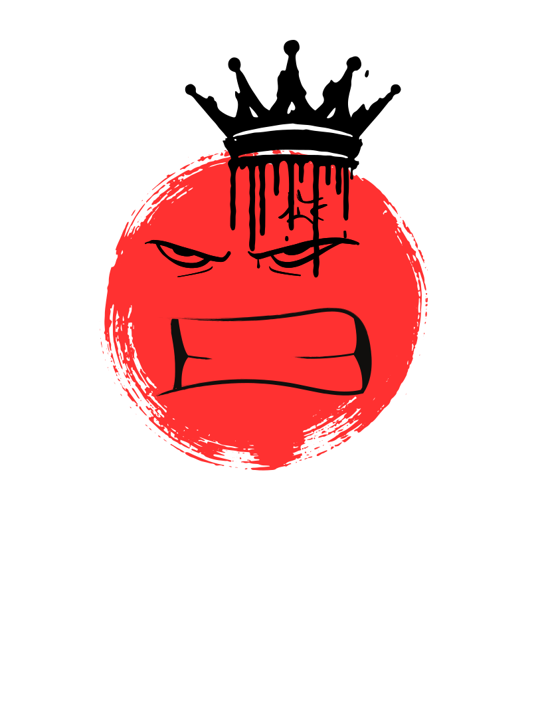

O Summer Beats Festival é o maior evento de música universitário do mundo,
reunindo os melhores artistas em um único palco.
Voltado ao público jovem universitário, o festival celebra a diversidade musical
com shows de rock, pop, eletrônica, rap e MPB.
Em 2026, o festival acontece nos dias 15, 16 e 17 de janeiro, no Campus Universitário
Central, com capacidade para mais de 50 mil pessoas por dia.
Prepare-se para três dias inesquecíveis de música, arte e cultura!





O Summer Beats Festival é o maior evento de música universitário do mundo, reunindo os melhores artistas em um único palco. Voltado ao público jovem universitário, o festival celebra a diversidade musical com shows de rock, pop, eletrônica, rap e MPB.
Em 2026, o festival acontece nos dias 15, 16 e 17 de janeiro, no Campus Universitário Central, com capacidade para mais de 50 mil pessoas por dia. Prepare-se para três dias inesquecíveis de música, arte e cultura!
Mais de 30 atrações internacionais em 3 palcos simultâneos
Área exclusiva de camping gratuito para estudantes com carteirinha
Food trucks com opções gastronômicas de todas as regiões do Brasil
Espaço cultural com exposições de arte, feira de discos e oficinas musicais